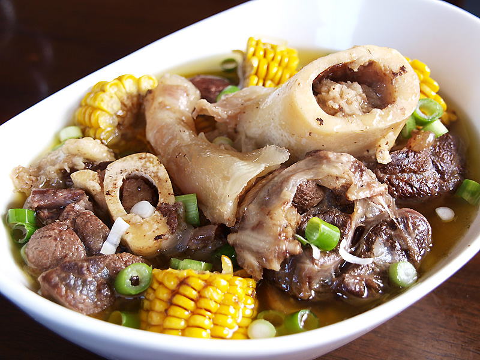
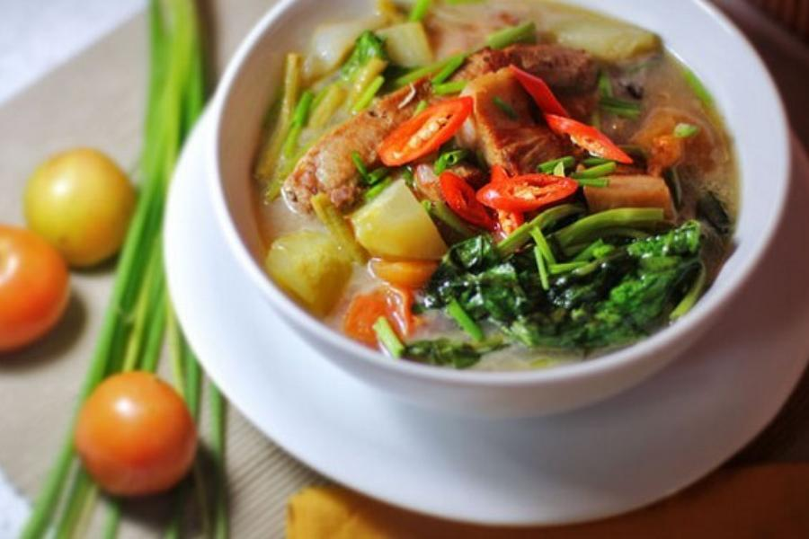
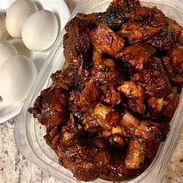

Main Menu
-

1. BULALO
It is a light colored soup that is made by cooking beef shanks and bone marrow until the collagen and fat has been melted into the clear broth.is a Filipino soup or stew characterized by its sour and savory taste.
Price: ₱450
-

2.SINIGANG
is a Filipino soup or stew characterized by its sour and savory taste.
Price: ₱450
-

3. KARE KARE
is a Philippine stew (kare derives from "curry") that features a thick savory peanut sauce.
Price: ₱450
-

4. ADOBO
was given by colonial-era Spaniards on the islands to a different indigenous cooking method that also uses vinegar.
Price: 350